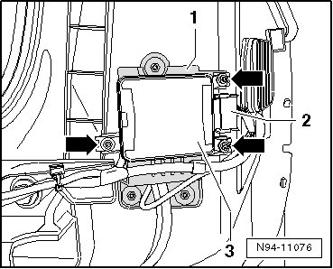

Collision Avoidance Module: Service and Repair
Lane Change Assistance Control Module with Radar Sensor
The left Lane Change Assistance Control Module (J769) or right Lane Change Assistance Control Module 2 (J770) is combined into one unit with the radar sensor for the respective side. The Lane Change Assistance Control Modules are located at the left and right behind the bumper cover.
• If both Lane Change Assistance Control Modules or only the left Lane Change Assistance Control Module (J769) (master) is replaced, the lane change assistance system must be first coded --> [ Lane Change Assistance Control Module, Coding ] Programming and Relearning and then calibrated --> [ Side Assist, Calibrating ] Side Assist, Calibrating after completing the assembly work.
• If only the (right) Lane Change Assistance Control Module 2 (J770) (slave) is changed, the lane change assistance system only has to be calibrated --> [ Side Assist, Calibrating ] Side Assist, Calibrating after completing the assembly work.
Removing
• The following describes the removal and installation of the right lane change assistance control module 2 (J770). The same procedure is used to remove and install the the left lane change assistance control module (J769) is done in the same way.
- Switch off ignition, switch off all electrical consumers and remove ignition key.
- Remove rear bumper cover Removal and Installation.
- Disengage and disconnect harness connector - 2 -.

- Remove three mounting bolts - arrows - and remove Lane Change Assistance Control Module - 3 - from bracket - 1 -.
Installing
Install in reverse order of removal, noting the following:
- After completing assembly work, calibrate the Side Assist lane change assistance system --> [ Side Assist, Calibrating ] Side Assist, Calibrating.
• If both Lane Change Assistance Control Modules or only the left Lane Change Assistance Control Module (J769) (master) is replaced, the lane change assistance system must be first coded --> [ Lane Change Assistance Control Module, Coding ] Programming and Relearning and then calibrated --> [ Side Assist, Calibrating ] Side Assist, Calibrating after completing the assembly work.
• If only the (right) Lane Change Assistance Control Module 2 (J770) (slave) is changed, the lane change assistance system only has to be calibrated --> [ Side Assist, Calibrating ] Side Assist, Calibrating after completing the assembly work.